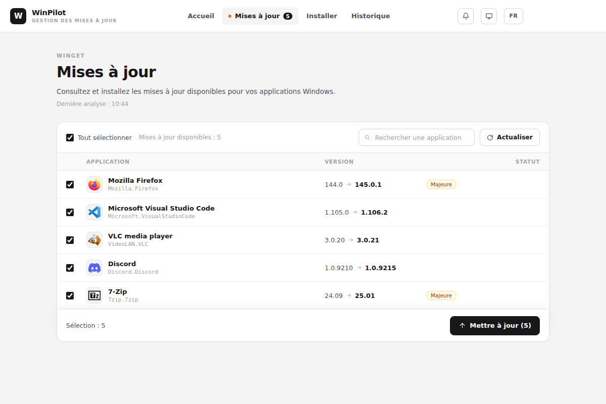

Vos applications Windows,
toujours à jour.
WinPilot repère les mises à jour de vos logiciels et les installe pour vous avec winget, sans ligne de commande.
Télécharger pour Windows
Tout ce qu'il faut, rien de plus
Tout mettre à jour
Voyez ce qui a une nouvelle version, puis mettez tout à jour ou seulement ce que vous cochez.
99 applications à portée de clic
Un catalogue en 12 catégories, et la recherche winget pour trouver le reste.
Discret en arrière-plan
WinPilot peut rester dans la zone de notification, vérifier tout seul et vous prévenir.
Vous gardez la main
Ignorez une application ou une version, et consultez l'historique des opérations.
Sans compte, sans télémétrie
Pas d'inscription, et WinPilot n'envoie aucune statistique d'utilisation.
Clair, sombre, français, anglais
L'interface s'adapte à votre thème Windows et se règle en deux langues.
Aperçu de l'application
Mises à jour
La version installée, la nouvelle, et les changements majeurs signalés. Cochez, lancez, c'est fait.

Installation
Cochez les applications voulues : WinPilot les installe à la suite, sans question.

Historique
Chaque mise à jour, installation et désinstallation reste consultable.

Captures réalisées avec des données d'exemple.
Télécharger WinPilot
Télécharger l'installeur- Lancez le fichier WinPilot-Setup téléchargé.
- Suivez l'installeur.
- WinPilot analyse vos applications. Les versions suivantes se proposent ensuite toutes seules.
L'installeur n'est pas signé : Windows SmartScreen peut afficher un avertissement. Cliquez alors sur Informations complémentaires, puis sur Exécuter quand même.